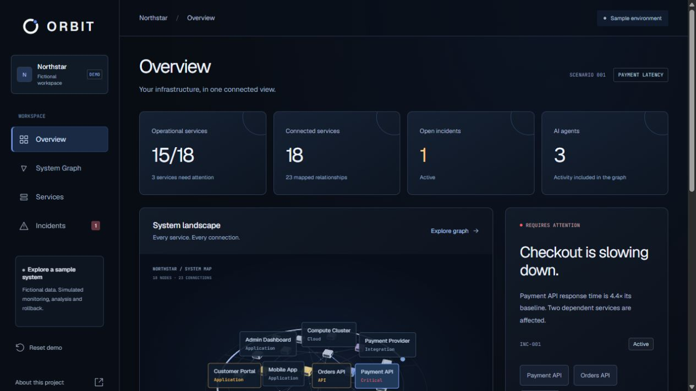
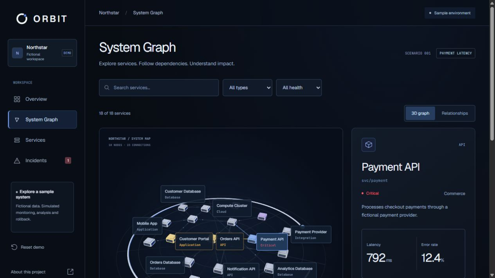
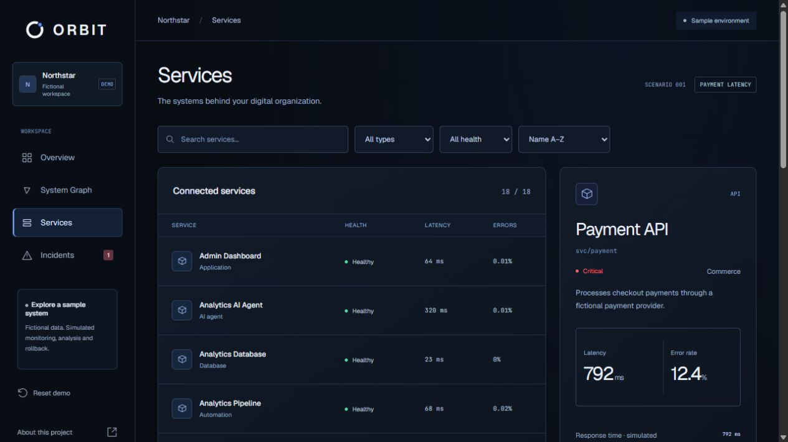
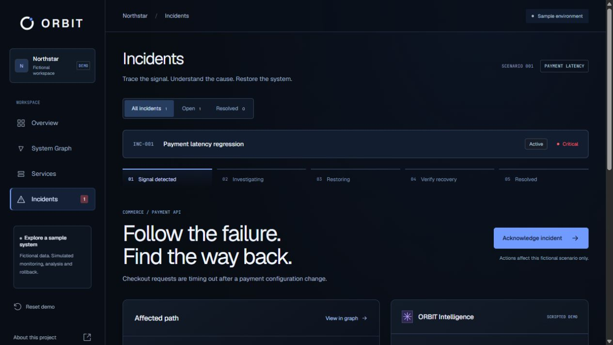

API / COMMERCE
Payment API
Processes checkout payments through a fictional payment provider.
The checkout connection
Customer Portal → Orders API → Payment APIExplore the service details below.
INTERACTIVE INFRASTRUCTURE ATLAS
Trace a checkout request across a connected system. See what changes when one service fails.
CHECKOUT REQUEST PATH
Play the checkout trace or select a service to see what it does.
INC-001 / PAYMENT LATENCY
A payment deployment slows checkout. Compare the same request at baseline and during the simulated incident.
Product walkthrough
Browse four views of the fictional Northstar workspace.

System health, open incidents and the services that need attention.

Trace dependency direction and inspect the services along a request.

Inspect latency, errors, ownership and deployment context for each service.

Inspect evidence, acknowledge, simulate rollback, then verify recovery.
Northstar network
Filter 18 Northstar services by type and inspect their role in the network.
18 services in the sample environment
API / COMMERCE
Processes checkout payments through a fictional payment provider.
Customer Portal submits checkout to Orders API. Orders API requests payment from Payment API. Payment API processes payments through the fictional Payment Provider.
The provider remains healthy in this scenario. The regression is in Payment API after deployment v4.8.2.
Follow the checkout request ↗Incident recovery
Inspect the deployment, restore the previous configuration, and verify the service before resolving the incident.
Recovery is a state to verify. Resolving the incident is a separate, deliberate action.
Compare latency, errors and the recent deployment. Understand the probable cause and its uncertainty.
Acknowledge the incident, then simulate restoring the previous payment configuration.
Review recovered service metrics before resolving. The timeline preserves the complete investigation.
Signal Atlas
Choose a service to inspect its role in the Northstar network.
Browse servicesAn interactive website built around a fictional network. The service metrics, incident and recovery are illustrative.